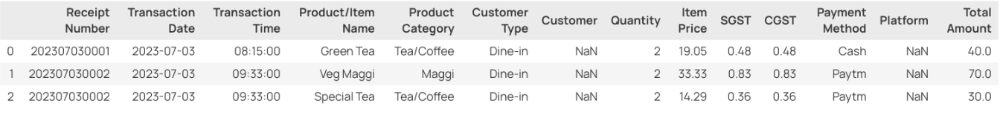
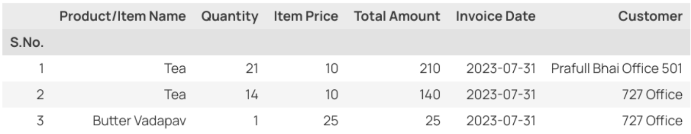
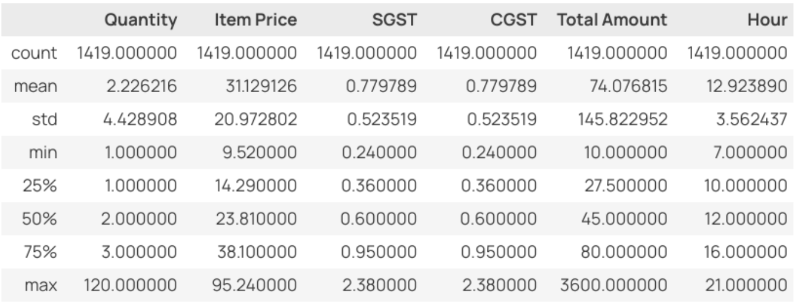
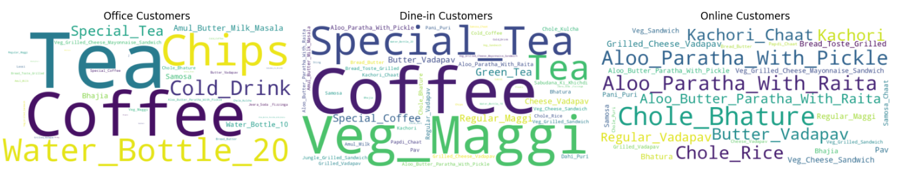

Data-Driven Transformation: Optimizing Operations and Customer Engagement at ABC Café
PDF: Mid Term.pdf
Executive Summary
The ABC Café business data management midterm submission involves an in-depth analysis of transactional data from July to October 2023, aiming to enhance operational efficiency and customer engagement. Two primary datasets, invoice.csv and office_sales.csv, were meticulously studied to extract key insights.
invoice.csv comprising 1419 entries revealed transaction details like Transaction Date, Product/Item Name, Quantity, and Total Amount. Notably, the dataset reflected transactional specifics, enlightening the operational aspects vital for strategic enhancements. Meanwhile, office_sales.csv with 290 entries provided coherent transactional details, offering crucial insights into “to-office-specific” sales dynamics.
Descriptive statistics highlighted numerical and categorical data analyses, uncovering popular product categories, customer types, and prevalent payment methods. Advanced analysis techniques including ARIMA time series forecasting, linear regression, and customer type-based clustering were employed to forecast sales trends, approximate daily sales patterns, and unveil distinct preferences across different customer types.
Key findings emphasized successful sales trend capturing by the ARIMA model, distinct preferences showcased by customer type-based clustering, and the capability of linear regression to portray overall sales trends. The next phase (Final Submission) will delve deeper into daily sales analysis, improved forecasting, and comprehensive customer segmentation, promising heightened efficiency and informed decision-making for sustained growth at the café.
Proof of Originality of the Data
Access the evidence substantiating the originality and authenticity of the datasets utilized for the Business Data Management project can be found in this link: [Link to the evidence].
Data Source Clarification
invoice.csv: Obtained directly from the café owner, these files comprise raw sales data from the POS system, encapsulating transactional records from July 2023 to October 2023.
office_sales.csv: Generated via Tabula from office sales bills PDFs, delineating sales to various offices within the VTC shopping complex during the same period.
Both datasets originate from ABC Café, with invoice.csv directly sourced and office_sales.csv extracted meticulously from authentic documents.
Confirmation Documentation and Other Evidence
Owner’s Declaration: A formal letter from the proprietor asserting cooperation and data provision for this project.
GMeet Recording and Photos of the shop: Supplementary materials encompassing a recorded discussion with [Owner Name], the café owner, along with pictures of the café premises.
Metadata and Descriptive Statistics
Metadata
Metadata: invoice.csv

The dataset invoice.csv comprises 1419 entries capturing transactions at ABC Café for the months July 2023 to October 2023. It delineates vital aspects instrumental in optimizing operational efficiency.
Data Composition
The dataset encompasses 15 columns revealing transaction details such as Transaction Date, Product/Item Name, Quantity, and Total Amount. Notably, the column Customer holds null values, as the recording machinery sometimes fails to input this information into the database.
The absence of entries in the Customer column signifies transactions where customer identification wasn’t recorded, limiting insights into specific consumer behaviour or preferences.
Additionally, the Platform column, populated only for transactions categorized under Online in Customer Type, elucidates the external platforms (Zomato or Swiggy) through which online orders were placed.
Data Integrity & Anomalies
Anomalies in this dataset include null entries in the Customer column, affecting the comprehensiveness of customer-centric analysis.
Wide-ranging values in Quantity (ranging from 1 to 120) and Total Amount (ranging from 10 to 3600) hint at potential outliers or diverse order sizes, warranting further scrutiny for data consistency and outlier detection.
Metadata: office_sales.csv

The office_sales.csv dataset, comprising 290 entries, portrays sales to office clientele, derived from scanned bills in PDF format using Tabula.
Data Source & Composition
This dataset encapsulates key transactional details like Product/Item Name, Quantity, Item Price, and Total Amount, crucial for understanding sales dynamics to office customers.
The extraction process from PDF bills via Tabula ensures the representation of sales data from various office transactions, contributing to the understanding of office-specific product preferences and purchase patterns.
Data Characteristics
The dataset exhibits a consistent structure without missing values, ensuring reliability in analysing office sales trends.
Notably, the range in Quantity (from 1 to 219) might require outlier identification to maintain dataset consistency and accuracy in subsequent analyses.
Descriptive Statistics
Numerical Data Analysis

Quantity, Item Price, Total Amount: The invoice dataset consists of 1419 entries. The mean quantity sold per transaction is approximately 2.23, with a standard deviation of around 4.43. The mean item price is approximately Rs. 31.13, ranging from Rs. 9.52 to Rs. 95.24. The mean total amount per transaction is about Rs. 74.08, with a considerable range from Rs. 10 to Rs. 3600.
Significance of Statistics: The statistical measures, including mean, median, and range, unveil insights crucial for operational decisions. They reveal sales’ typical volume, pricing distribution, and transaction sizes, aiding precise inventory management, pricing strategies, and identification of influential outlier transactions impacting overall revenue.
Categorical Data Analysis

Product Category: Tea/Coffee, Vadapav, and Chaat appear to be popular categories, indicating potential high-demand items. Time Distribution: Most transactions occur during Brunch and Evening Tea Time, with a relatively smaller proportion taking place during Breakfast, Lunch, and Dinner.

Time Distribution: Most transactions occur during Brunch and Evening Tea Time, with a relatively smaller proportion taking place during Breakfast, Lunch, and Dinner.

Customer Type: The Majority of transactions are from Dine-in customers and Office Orders, with a smaller portion from Online and Event Catering.
Payment Method: Cash, Paytm, GPay, and PhonePay are commonly used, while Credit Card, and Debit Card constitute a smaller portion.
Detailed Explanation of Analysis Process/Method
Sales Forecasting through ARIMA Time Series Analysis

Utilizing the ARIMA (AutoRegressive Integrated Moving Average) model with parameter values (p, d, q) of (3, 1, 0) via the auto_arima function from the pmdarima package, an insightful sales forecast was generated. This model effectively captured the prevailing trend in sales data, showcasing its potential in forecasting future sales patterns. The plotted forecast, juxtaposed with existing trends, demonstrates the model’s ability to analyse sequential transactional data, providing valuable insights for ABC Café in [City] to optimize inventory management and operational strategies.
Linear Regression Analysis: Total Sales Prediction Based on Time and Customer Type

Despite an R-squared score of -0.52, the Linear Regression model, utilizing “Hour” and “Customer Type” as independent variables and “Total Amount” as the dependent variable, provided a meaningful portrayal of the overall daily sales trends. The visual representation of predicted versus actual sales through a line plot indicates the model’s capability to approximate the general sales patterns throughout the day, considering different customer types. Although the R-squared score may suggest some variance from the actual data, the model offers insights into the cumulative sales trends, serving as a valuable tool for sales estimation at ABC Café in [City].
Customer Type-based Popular Product Analysis

Utilizing clustering techniques, a customer type-centric analysis unveils distinct preferences at ABC Café. Among “Office Orders”, “Tea” emerges as the favoured choice, resonating with the professional ambiance. Conversely, “Coffee” dominates the preferences for “Dine-in,” reflecting the café’s ambiance and the inclination for a leisurely experience. Surprisingly, “Chole Bhature” stands out as the top pick for “Online” orders, emphasizing convenience and perhaps regional culinary allure. The word cloud plot visually encapsulates these preferences, showcasing the prominent items for each customer type, vital for tailored marketing and menu enhancement strategies.
Results and Findings
Through comprehensive analyses encompassing ARIMA Time Series Forecasting, Linear Regression, and Customer Type-Based Clustering, several critical insights have surfaced. The ARIMA model successfully captured sales trends, aiding in forecasting future sales patterns. However, the Linear Regression model, while showcasing general daily sales trends, exhibited limited correlation with the Total Amount (R-squared score: -0.52). Meanwhile, Customer Type-Based Clustering unveiled distinct preferences: “Tea” for “Office Orders,” “Coffee” for “Dine-in,” and “Chole Bhature” for “Online” transactions.
Moving forward, the final submission will entail a more detailed examination. This involves deeper daily sales and performance analyses, refining demand forecasting by considering hourly variations for various items, and enhancing the Regression Analysis through improved variable selection and feature engineering. Additionally, a comprehensive customer segmentation analysis will be conducted, aiming to discern purchase patterns and timings across “Office Orders,” “Dine-in,” and “Online” customer types.
These deeper analyses will promise heightened preparedness for mitigating losses and augmenting efficiency at ABC Café. Resulting enhanced insights into sales trends, demand forecasts, and customer preferences will facilitate strategic decision-making, enabling proactive measures to optimize operations and foster sustained growth.